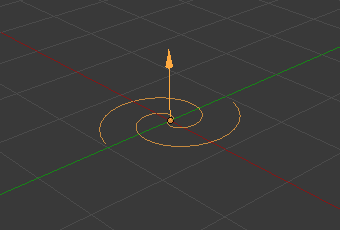
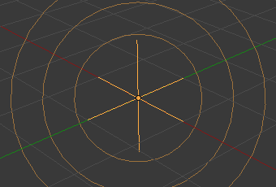

Вступ¶
Force Fields offer a way to influence a simulation, in example to add extra movement. Particles, Soft Bodies, Rigid Bodies, and Cloth objects can all be affected by forces fields. Force Fields automatically affect everything. To remove a simulation or particle system from their influence, simply turn down the influence of that type of Force Field in its Field Weights panel.
- Усі типи об'єктів та частинок можуть генерувати поля, але тільки об'єкт типу «крива» може володіти полем «Провідна Крива» -- Curve Guide.
- Силові Поля можуть також генеруватися з частинок. Дивіться детальніше тут -- Particle Physics
- The objects need to share at least one common layer to have an effect.
Ви можете лімітувати цей ефект для частинок групою об'єктів (дивіться детальніше тут -- Particle Physics).

|

|

|

|
Створення Силового Поля¶
Орієнтир -- Reference
| Mode: | Object Mode |
|---|---|
| Panel: |
Для створення одиничного Силового Поля ви можете викликати меню «Додання > Силове Поле» -- та вибрати бажаний тип силового поля. Цей метод створює об'єкт типу «Порожняк» -- Empty з прикріпленим до нього силовим полем.
Для створення поля з наявного об'єкта ви повинні виділити цей об'єкт та увімкнути фізику силового поля кнопкою Force Field у вкладці Physics Редактора Властивостей. Вибрати тип поля у списку опції «Тип» -- Type на панелі Force Fields.
Ці поля мають багато загальних опцій. Ці опції пояснюються для сферичного поля Force.
Ghi chú
After changing the fields Fields panel or deflection Collision panel settings, you have to recalculate the particle, soft body or cloth system by Free Cache, this is not done automatically. You can clear the cache for all selected objects with Ctrl-B .
Particles react to all kinds of Force Fields, soft bodies only to Spherical, Wind, Vortex (they react on Harmonic fields but not in a useful way).
Загальні устави полів¶
Більшість полів мають однакові устави, хоча вони і діють дуже по-різному. Унікальні устави для типів полів описуються окремо. Типи полів «Провідна Крива» та «Текстура» -- Texture мають зовсім інші опції.
- Форма -- Shape
Поле за формою впливу може бути:
- Точка -- Point
- Точка з все-напрямним впливом.
- Площина -- Plane
- Constant in the XY plane, changes only in Z direction.
- Поверхня -- Surface
- ToDo.
- Кожна Точка -- Every Point
- ToDo.
- Сила -- Strength
- The strength of the field effect. This can be positive or negative to change the direction that the force operates in. A force field's strength is scaled with the force object's scale, allowing you to scale up and down the scene, keeping the same effects.
- Потік -- Flow
- Конвертує силу ефектора у скорість повітряного потоку.
- Шум -- Noise
- Додає шум у силу поля.
- Базис -- Seed
- Змінює базис випадкового шуму.
- Точка Впливу -- Effect Point
- Ви можете перемикати вплив поля на «Локацію» -- Location та «Оберт» -- Rotation частинки.
- Поглинання Зіткнення -- Collision Absorption
- Поле буде поглинатися об'єктами з властивістю зіткнення.
Спад -- Falloff¶
Here you can specify the shape of the force field (if the falloff Power is greater than 0).
- Тип Спаду -- Falloff Type
- Сфера -- Sphere
- The falloff is uniform in all directions, as in a sphere.
- Труба -- Tube
- The falloff results in a tube-shaped force field. The field's Radial Power can be adjusted, as well as the Minimum and Maximum distances of the field.
- Конус -- Cone
- The falloff results in a cone-shaped force field. Additional options are the same as those of Tube options.
- Напрям Z -- Z Direction
- The falloff can be set to apply only in the direction of the positive Z axis, negative Z axis, or both.
- Потужність -- Power (Power)
- How the power of the force field changes with the distance from the force field. If r is the distance from the center of the object, the force changes with 1/ rpower. A falloff of 2 changes the force field with 1/ r2, which is the falloff of gravitational pull.
- Максимум відстані -- Max Distance
- Makes the force field affect other objects only within a specified maximum radius (shown by an additional circle around the object).
- Мінімум відстані -- Min Distance
- The distance from the object center, up to where the force field is effective with full strength. If you have a falloff of 0 this parameter will have no effect, because the field is effective with full strength up to Max Distance (or the infinity). Shown by an additional circle around the object.